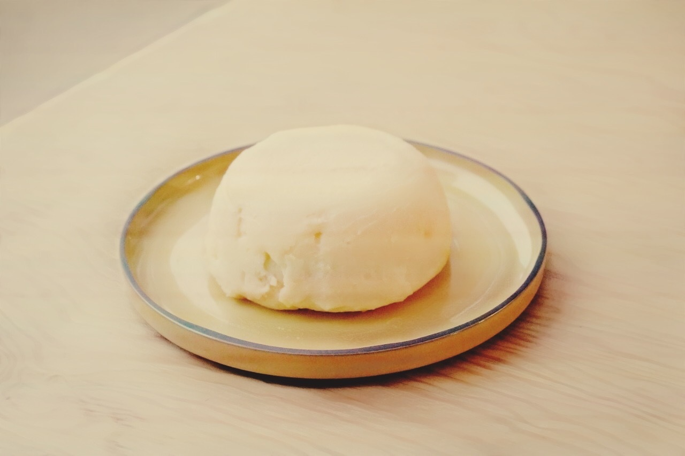

Conversa em conserva
Conversa em conserva
Queijo feito com os leites de cabra, vaca, ovelha e monika
20 cm x 20 cm
Conversa em conserva é uma mussarela feita a partir dos mesmos leites que fizeram parte do vídeo em timelapse mencionado anteriormente. Esse objeto, efêmero por excelência e cuja existência compostada já se encontra em outra dimensão orgânica, é um experimento alimentar pensado a partir dessa noção de leite como língua: como se comportariam, juntos, em forma de queijo, todos esses leites encontrados e misturados como se estivessem em uma conversa? É sabido que a primeira forma de conservação do leite foi sua forma queijo. A partir daí técnicas de aperfeiçoamento de conservação e de gourmetização do alimento se tornaram não somente uma maneira de conservá-lo, mas também de experimentá-lo em outros estados-limite de conservação que confeririam sabores e texturas diferenciados e complexos.
Via Lactea – uma especulação cosmopoética, 2019 - 2020
Conjunto de trabalhos especulativos: vídeo, objeto, fotografias / Ganhador do Prix Appert de la Jeune Création 2019
Conservation of the conversation is a mozzarella made from the same milks that were part of the video in timelapse mentioned above. This object, ephemeral par excellence and whose composed existence is already found in another organic dimension, is a food experiment thought out from this notion of milk as a language: how would they behave, together, in the form of cheese, all these milks found and mixed as if they were in a conversation? It is known that the first form of milk conservation was its cheese form. From then on, techniques to improve the conservation and gourmetization of food became not only a way to preserve it, but also to try it in other limit states of conservation that would confer different and complex flavors and textures.
Via Lactea - a cosmopoetic speculation, 2019 - 2020
Set of speculative works: video, object, photographs / Prix Appert de la Jeune Création 2019 [Winner]
